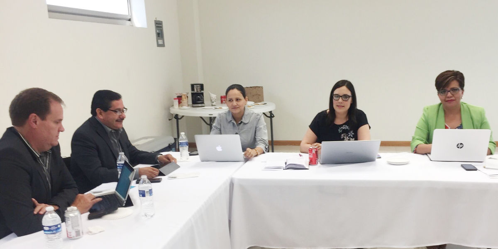

Comisión Ejecutiva del Sistema Anticorrupción del Estado de Coahuila de Zaragoza.
El pasado 24 de mayo, se llevó a cabo la tercera reunión extraordinaria de la Comisión Ejecutiva, con el objetivo de dar seguimiento a las actividades de su Programa de Trabajo.
Estuvieron presentes, Marcela Castañeda Secretaria Técnica de la Secretaría Ejecutiva del Sistema Anticorrupción del Estado de Coahuila, así como los Consejeros de Participación Ciudadana, Lourdes de Koster, Juan Adolfo Von Bertrab, Carlos Rangel y Ana Yuri Solís.
El consejero Juan Adolfo Von Bertrab, a cargo del tema de vinculación con municipios, expuso elementos para crear una política difusión del SEA con los ayuntamientos; Carlos Rangel, respecto al tema jurídico, comentó el desarrollo de un protocolo que permita la presentación de quejas, denuncias o información sobre posibles actos de corrupción y faltas administrativas.
Lourdes de Koster expresó el avance en la estrategia de difusión del SEA, relacionada al desarrollo de un espacio radiofónico que tratará temas anticorrupción, así como una propuesta de agenda de vinculación con asociaciones civiles y sector académico, en específico, del norte del estado. Ana Yuri Solís puso a consideración de los integrantes de la Comisión, la metodología para la elaboración del Plan Anticorrupción del Estado de Coahuila, misma que fue aprobada; expuso también, el avance relacionado a los mecanismos para la recopilación, sistematización, procesamiento, intercambio y actualización de información del Sistema y Plataforma Digital.
La Secretaría Ejecutiva mostró el avance en la coordinación interinstitucional, así como del diagnóstico que realiza la dirección de Políticas Públicas y el sitio web del Sistema Anticorrupción del Estado de Coahuila.

24 mayo 2018